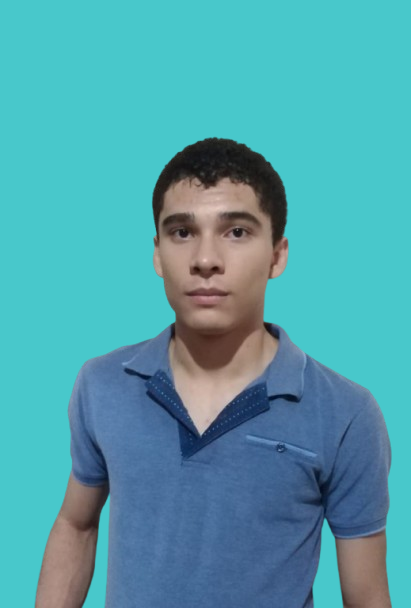

Miembros de la Planilla
Presidente
Fuad Erikcel Dominguez Betancourth

Vicepresidenta
Karla Milagro Lopez Rivera

Secretaria
Hellen Vanessa Pérez Pavón
Tesorero
Jose Miguel Ramirez Marcia

Tesorero 2
Anthony Ricardo Velásquez Padilla
Fiscal
William Odair Cruz Contreras
Fiscal 2
Sandra Melissa Ruiz Flores

Vocal 1
Leonardo Daniel Arteaga Vásquez

Vocal 2
Gabriel Emilio Sánchez Bonilla